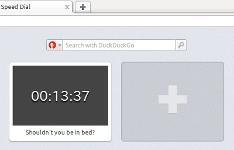

Cara membuat ekstensi Speed Dial Opera
From Opera 15 onward, Opera 11 & 12’s extension format is no longer supported, and instead, we’ve switched to Chromium’s extension model. Check out our new documentation for developing extensions for Opera 15 and higher and start building your own extensions.
Pengantar
Di tahun 2007 kami memperkenalkan fitur Panggilan Cepat atau yang lebih dikenal dengan Speed Dial kepada dunia. Konsep ini kemudian popular dan banyak ditemukan implementasi serupa di browser-browser lain. Tetapi selain berbangga hati, orang tua macam apa yang tidak membantu anak-anaknya untuk tumbuh dan mengembangkan kemampuan baru? Untuk Opera 11.10, kami meningkatkan display visual dan UX dari Panggil Cepat dan menambahkan penghubung bagi para developer untuk mengontrol tampilan situs mereka ketika tampil di kotak Speed Dial. Di Opera 11.50, kami melangkah lebih jauh dengan ekstensi Panggilan Cepat.
Selain dapat menambahkan browser Anda dengan ratusan ekstensi dari Opera, Anda juga dapat merubah dan mengembangkan Panggil Cepat untuk dapat membuatnya semakin berguna. Tidak hanya terbatas pada halaman web atau ikon tampilan halaman, Panggil Cepat saat ini dapat mengubah konten ekstensi, dan artikel ini akan menunjukkan caranya.
Note: Untuk melihat contoh yang sedang berjalan, Anda perlu mengunduh Opera 11.50, ditambah contoh ekstensi Speed Dial : download Speed Dial jam kami.
Konsep dasar
Untuk dapat menjaga kemampuan dari pengembangan ekstensi Opera reguler, ekstensi Panggil Cepat menggunakan format dan struktur yang sama namun ada beberapa penambahan lainnya. Dengan lain kata, adanya sedikit penambahan pada file config.xml dapat merubah ekstensi Opera tersebut menjadi ekstensi Speed Dial:
- Sebuah elemen
<feature>dengan atributnamedari valueopera:speeddial, akan menjadikan ekstensi tersebut menjadi sebuah ekstensi Speed Dial. - Sebuah atribut
viewmodesyang berisi tag<widget>dengan valueminimized: akan menampilkan halaman background page pada kotak Speed Dial.
Harap berhati-hati, biar bagaimanapun ekstensi tersebut tidak dapat digunakan di fitur Panggil Cepat dan toolbar pada browser. Dengan kata lain, ekstensi yang telah tersedia di toolbar tidak bisa dijadikan ekstensi di Panggil Cepat pada implementasi saat ini.
Menentukan ekstensi Panggil Cepat dengan config.xml
Mari jadikan metodologi tersebut dengan mempraktekkannya dan mencobanya melalui contoh ekstensi. Untuk melihat kode snippets di konteks, unduh ekstensi Speed Dial jam kami dan lihat file sumber di dalamnya. Tabel 1 menunjukkan bagaimana ekstensi kami terlihat setelah selesai.

Tabel 1 : ekstensi jam yang terunduh di Panggilan Cepat browser Opera.
Kotak Panggilan Cepat yang biasa menunjukkan tampilan layar suatu halaman di luar Web, pada ekstensi Panggilan Cepat menunjukkan halaman permulaan (atau
latar belakang) dari ekstensi – ini adalah index.html. Untuk dapat menggunakannya, tambahkan atribut viewmodes ke tag <widget> pada config.xml, dengan nilai minimized:
<widget xmlns="http://www.w3.org/ns/widgets" id="http://example.com/SimpleClockSD" viewmodes="minimized">Ini akan memberitahukan browser untuk menunjukkan halaman belakang ekstensi dalam format yang diperkecil - ukuran untuk Panggilan Cepat perorangan dalam tingkatan 100% zoom adalah 256 pixel dan tingi 160 pixel. Sebagai tambahan, kami juga menambahkan elemen untuk feature Panggilan Cepat Opera dengan atribut required dan elemen param:
<feature name="opera:speeddial" required="false">
<param name="url" value="http://en.wikipedia.org/wiki/Time"/>
</feature>Atribut required dari elemen feature mengindikasi apakah Panggilan Cepat dibutuhkan untuk menjalankan ekstensi ini. Contohnya, mungkin ada browser lain atau agen pengguna yang compatible dengan ekstensi Opera, tetapi tidak mempunyai Speed Dial. Jika ekstensi Anda masih tetap
berfungsi pada kasus ini, gunakan false; jika tidak berfungsi tanpa Panggilan Cepat, pilih true.
Elemen param dibutuhkan, dan menentukan halaman mana yang harus dibuka ketika ikon Panggilan Cepat diklik.
Berikut file config.xml yang lengkap untuk ekstensi ini :
<?xml version="1.0" encoding="utf-8"?>
<widget xmlns="http://www.w3.org/ns/widgets"
id="http://example.com/SimpleClockSD" defaultlocale="en"
viewmodes="minimized">
<name short="Simple Clock">Clock Speed Dial Extension</name>
<description>This is an example Speed Dial extension showing a
simple clock.</description>
<author href="http://people.opera.com/danield/">Daniel
Davis</author>
<icon src="images/icon_64.png"/> <!-- Icon source: http://www.openclipart.org/detail/17552 -->
<feature name="opera:speeddial" required="false">
<param name="url" value="http://en.wikipedia.org/wiki/Time"/>
</feature>>
</widget>Menambahkan konten pada ekstensi
Langkah selanjutnya adalah membuat sesuatu yang menarik untuk ditampilkan pada jendela Panggil Cepat. Untuk halaman background ekstensi, kita perlu membuat sebuah file dengan nama index.html pada direktori yang sama dengan config.xml. Misalnya, kita membuat jam digital JavaScript sederhana yang menampilkan waktu saat ini hingga detiknya. Pertama, kita akan membuat dasar index.html dengan elemen kosong output:
<!DOCTYPE html>
<html lang="en">
<head>
<meta charset="utf-8">
<link rel="stylesheet" href="style.css">
<title>Clock Panggil Cepat Extension</title>
</head>
<body>
<output></output>
<script src="scripts/background.js"></script>
</body>
</html>Setelah itu, kita perlu membuat direktori scripts yang berisi file background.js yang telah berisi link. File JS akan terlihat seperti ini:
window.addEventListener('load', function() {
// Fungsi sederhana untuk awalan nol jika nilai yang terlewati kurang dari
10
function formatTime(time) {
return (time < 10) ? '0' + time : time;
}
var output = document.querySelector('output');
var date, hours, mins, secs;
// Tampilkan waktu sekarang setiap 500 milliseconds
var timer = window.setInterval(function() {
date = new Date();
hours = date.getHours();
mins = date.getMinutes();
secs = date.getSeconds();
output.innerHTML = formatTime(hours) + ':' + formatTime(mins) + ':' +
formatTime(secs);
}, 500); // Dua kali dalam sedetik untuk memungkinkan sedikit penundaan
eksekusi JavaScript
}, false);Style sheetnya (style.css) juga sederhana, namun ada trik jitunya:
* {
margin: 0;
padding: 0;
}
html {
height: 100%;
}
/* Gunakan display:table dan display:table-cell untuk menggunakan vertical-align:middle */
body {
background: #444;
color: #fff;
display: table;
height: 100%;
width: 100%;
}
output {
display: table-cell;
font-family: monospace;
font-size: 10em;
text-align: center;
text-shadow: 0 0.1em 0.1em #000;
vertical-align: middle;
}
/* Style disini digunakan hanya pada mode "minimized" */
@media screen and (view-mode: minimized) {
output {
font-size: 1.8em;
}
}Seperti yang bisa Anda lihat, terdapat CSS3 media query dibagian bawah dari file ini yang dapat mengecek kondisi view-mode: minimized, agar sesuai dengan view-mode spesifikasi Media Feature. Dengan kata lain, styles pada bagian ini
hanya diterapkan jika halaman ditampilkan pada mode minimized seperti pada kolom Panggil Cepat. Ini merupakan cara yang mudah untuk menimpa style pada situasi tertentu tanpa perlu menyimpan banyak desain.
Sentuhan akhir ekstensi
Seperti biasanya, untuk membungkus kreasi kita sebagai sebuah ekstensi, kami akan zip semua file didalam direktori (namun bukan direktori itu sendiri) dan menamainya dengan sebuah ekstensi .oex. Jika Anda belum melakukannya, unduh clock_SD_extension.oex dan cobalah terlebih dulu.
API SpeedDialContext
Setelah terinstal, ekstensi kami akan mengontrol kotak Panggilan Cepat secara dinamis dengan API SpeedDialContext. API ini sangat sederhana dengan dua properti: title and url. Mereka diakses dari background JavaScript melalui objek opera.contexts.speeddial seperti:
if (opera.contexts.speeddial) {
var sd = opera.contexts.speeddial;
sd.title = "My title";
sd.url = "mypage.html";
}Kita dapat menggunakan fitur ini untuk mengembangkan ekstensi jam, misalnya membuatnya menampilkan sebuah pesan berdasarkan waktu tertentu dalam sehari. File yang perlu kita ubah hanyalah file JavaScript background.js:
window.addEventListener('load', function() {
// Fungsi sederhana untuk awalan nol jika nilai yang dilalui kurang dari 10
function formatTime(time) {
return (time < 10) ? '0' + time : time;
}
var output = document.querySelector('output');
var date, hours, mins, secs, tmp_hours, timeofday;
var messages = {
"morning": "Good morning!",
"afternoon": "Good afternoon!",
"evening": "Good evening!",
"night": "Shouldn't you be in bed?"
};
// Tampilkan waktu saat ini tiap 500 milliseconds
var timer = window.setInterval(function() {
date = new Date();
hours = date.getHours();
mins = date.getMinutes();
secs = date.getSeconds();
output.innerHTML = formatTime(hours) + ':' + formatTime(mins) + ':' +
formatTime(secs);
// Buat judul Panggilan Cepat menampilkan pesan sesuai jamnya
if (hours !== tmp_hours) {
if (hours > 15) {
timeofday = 'evening';
} else if (hours > 11) {
timeofday = 'afternoon';
} else if (hours > 3) {
timeofday = 'morning';
} else {
timeofday = 'night';
}
if (opera.contexts.speeddial) {
opera.contexts.speeddial.title = messages[timeofday];
}
tmp_hours = hours;
}
}, 500); // Twice a second to allow for slight delays in JavaScript
execution
}, false);Ini sama dengan contoh yang pertama namun ada tambahannya beberap:
- Objek
messagesberisi pesan untuk beberapa waktu tertentu dalam sehari. - Pengecekan berulang yang menjalankan kode ketika jamnya telah berubah.
- Baris yang menampilkan pesan yang relevan dari objek
messagespada judul Panggilan Cepat.
Ekstensi ini bisa diunduh dari: friendly_clock_SD_extension.oex. Ketika terinstal, seperti ini tampilannya:

Gambar 2: Ekstensi jam menarik terinstal pada Panggilan Cepat browser Opera.
Kesimpulan
Seperti yang dapat Anda lihat, developer ekstensi sekarang memiliki lebih banyak kesempatan untuk menambahkan ekstensi yang mudah digunakan, nyaman atau hanya untuk kesenangan. Contoh diatas tadi merupakan dasar saja, tapi menampilkan potensi dari ekstensi Speed Dial ketika dikombinasikan dengan ide cerdas dan kemampuan mengembangkan web. Kami berharap untuk bisa melihat ekstensi Speed Dial ini menjadi lebih dari sekedar tautan cantik ke suatu situs web. Kami berharap dapat menemui lebih banyak kekreatifan dari para pengembang web dalam menggunakan API pada Katalog Ekstensi Opera!
Referensi
Opera Extensions API: Panduan Panggilan Cepat
This article is licensed under a Creative Commons Attribution 3.0 Unported license.
Comments
The forum archive of this article is still available on My Opera.
-
ga ngerti ah !
No new comments accepted.Triadi
Wednesday, August 1, 2012